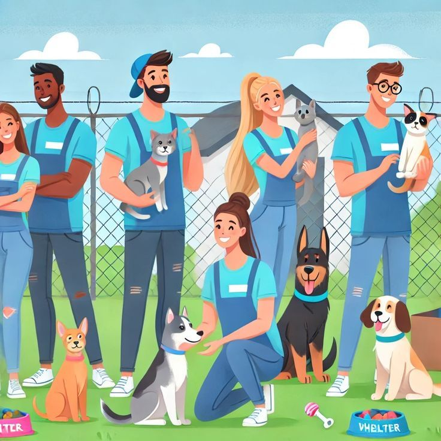
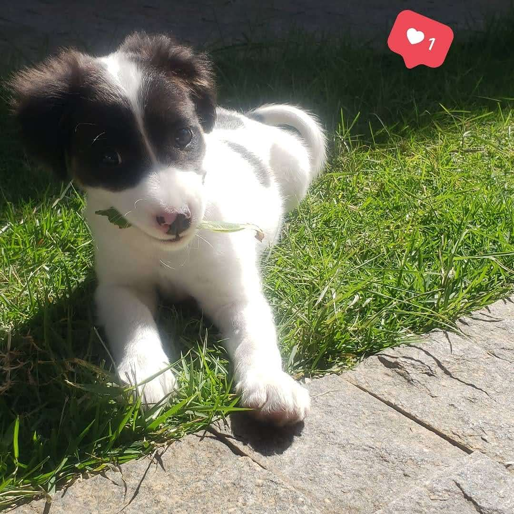

Juntos, podemos fazer a diferença na vida dos animais abandonados.
Junte-se a nós nessa causa nobre!
Quero ser um voluntário!Somos uma organização sem fins lucrativos que atua com animais abandonados.
A ONG Aumigão tem como missão resgatar, cuidar e encontrar lares amorosos para animais abandonados, promovendo o bem-estar animal e a conscientização sobre a importância da adoção responsável.
